This User Manaul will show how to use the VRMeeting App
If you're looking for how to install the VRMeeting app on your phone you'll want to head over to the Installation Guide for the Android App
Don't forget before you can use the app you'll need to configure it. You can find out how to do that Here
In order to create an account you need to first opent the app and click on the button at the top labelled Create Account
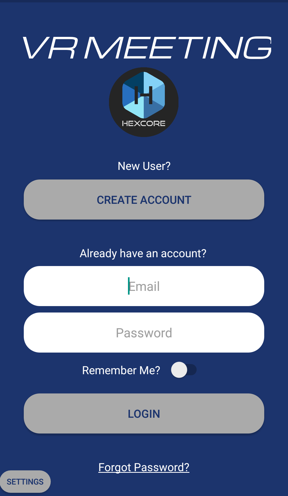Next you'll need to fill in the details shown to you on the screen.
Note: The Work Email and Work Phone fields are optionalNote: The password must contain at least 8 characters, 1 of which is a number
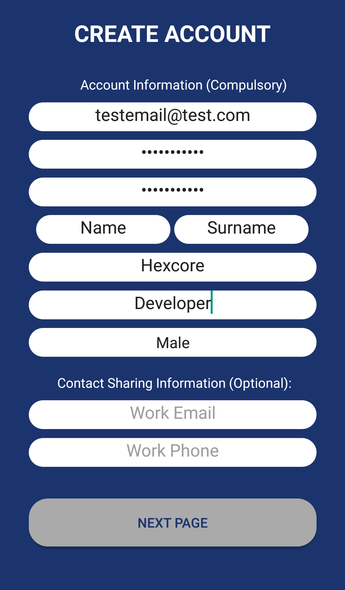Once you've filled in the details on the page press the Next Page button at the bottom of the screen. If you've incorrectly filled in any fields you will be prompted to correct them
Next you'll need to select an avatar to represent you. You can do this one of two ways:
You can select one manually by swiping left or right over the image of a person:
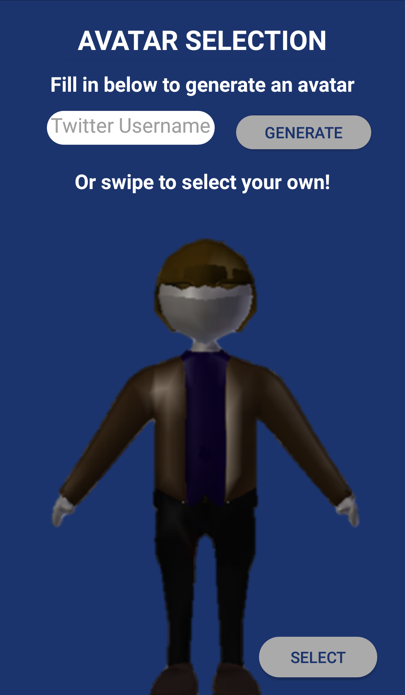You'll need to choose and answer 3 security questions that will be used to help you reset your password in the event that you forget it
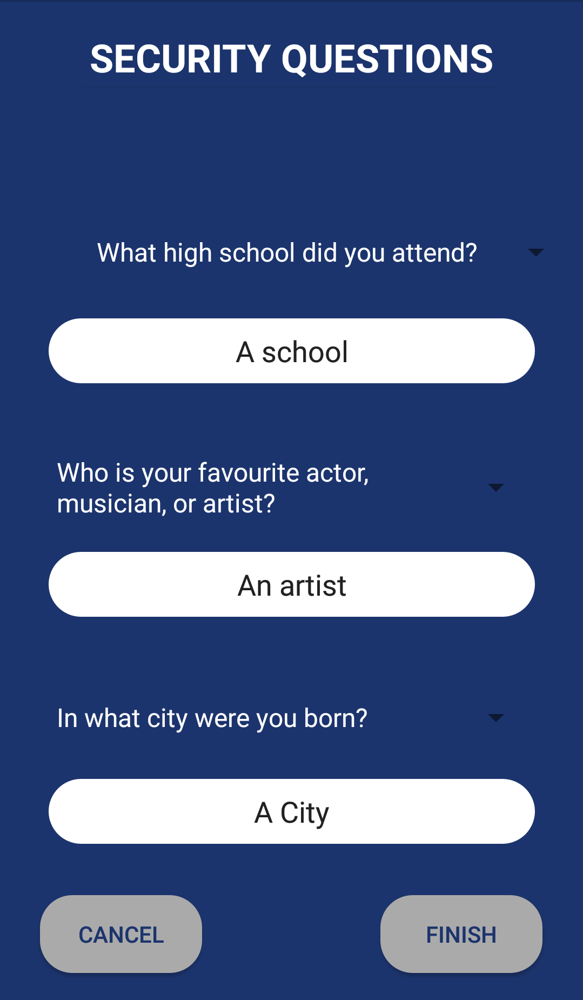Once you've finished you need to just press the Finish button and assuming the Web Server and App have been configured correctly, you'll be returned to the main menu and your account will now be ready to be used
To login to the App, simply enter the email address and password for your account in to the text boxes on the opening-page and press Login
If you select Remember Me? then you will not have to enter your credentials again until you logout of the app. Otherwise, you will be re-prompted for your login credentials every so often if you close the app down
If you forget your password then you can press the Forgot Password? link at the bottom of the opening page
This will take you to a page where you will be requested to enter the email address of the account you are trying to log into
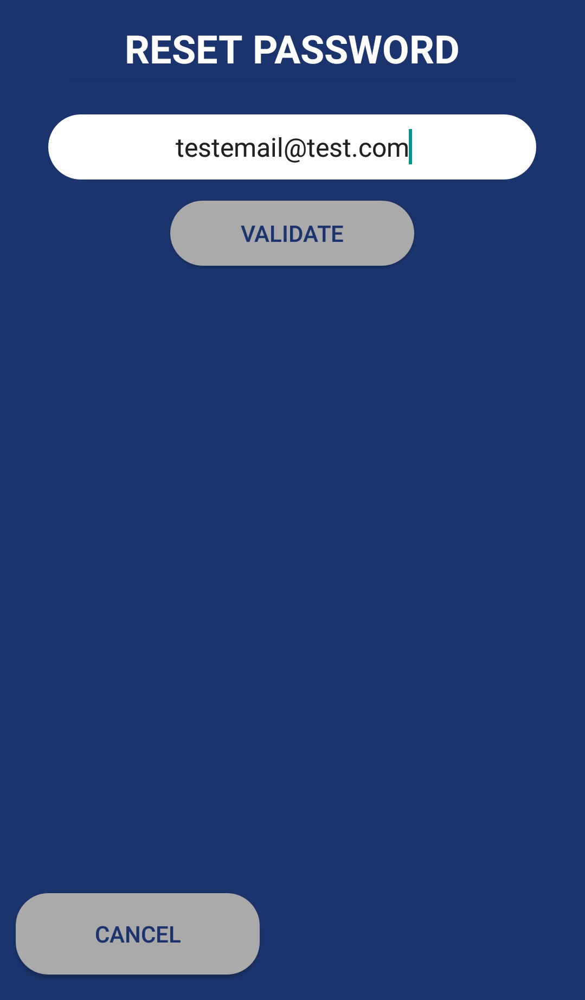Simply enter your email address and you will then be required to answer your 3 security questions you setup when you created the account
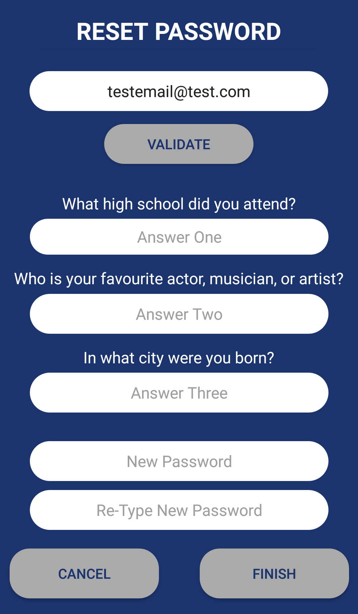If you answer all 3 questions correctly then you will be given the opportunity to change your password.
Note: Your new password must be at least 8 characters long with at least 1 character being a number
To create a meeting you'll need to first Login to the app and then press the Create Meeting button on the main menu
Here you'll need to enter the:
If you choose to upload a PDF please bare in mind that the file will take a minute to upload
When you press Next your meeting will be created and you'll be returned to the Main Menu. Your meeting code will be placed into your clip board along with the meeting description so you can send it straight to your participants
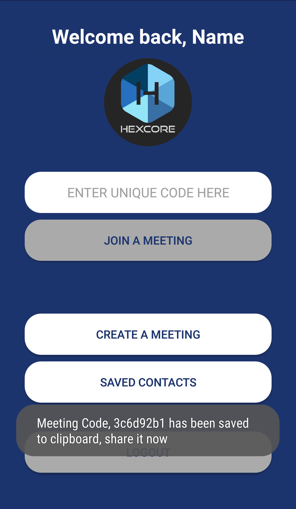 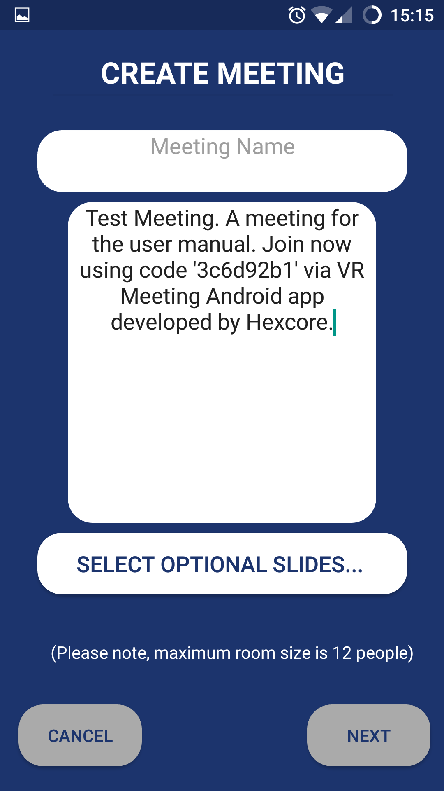Here I've pasted the meeting information from the clip-board into the create a meeting page just to show what an example message would look like
In order to join a meeting you'll first need a Meeting Code. This can be obtained in one of two ways:
Once you've got a meeting code you'll want to enter it into the Meeting Code field on the main home screen and press Join Meeting
This should launch the Unity app, displaying a Unity splash and a connection to the Host Server will be made
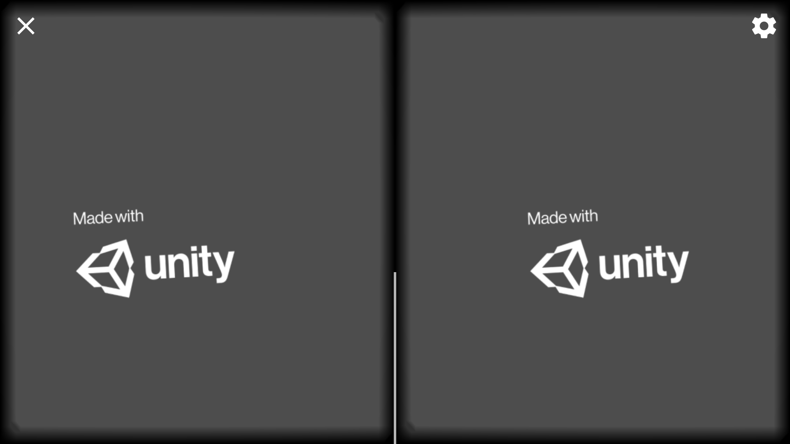Below you'll find diagrams that are labelled to illustrate the features to expect in the Virtual Environment
You can look around the environment by moving your head


Looking at the Navigation buttons for a breif moment will cause them to change the current presentation slide you are on. The button will briefly pulse to indicate that it has been triggered
If you continue to look at the button it will continuously change slides in 1 second intervals until you look away
Please be patient with slide changes as it may not be instantaneous
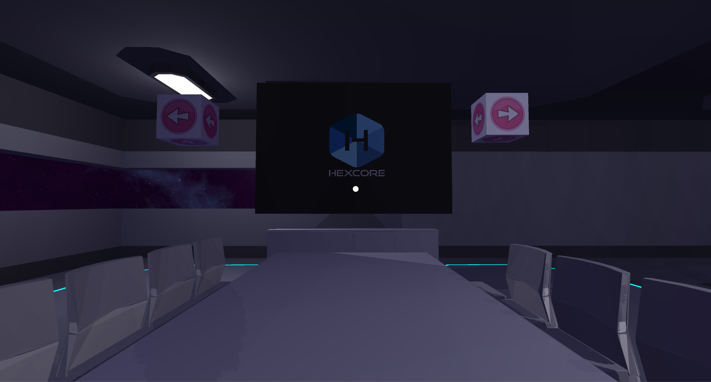If you would like to leave the meeting you are currently in then you can look at the Leave button situated on the desk infront of you.
When looked at the button will count down from 5. When it reaches 0 you will be returned to the main menu
 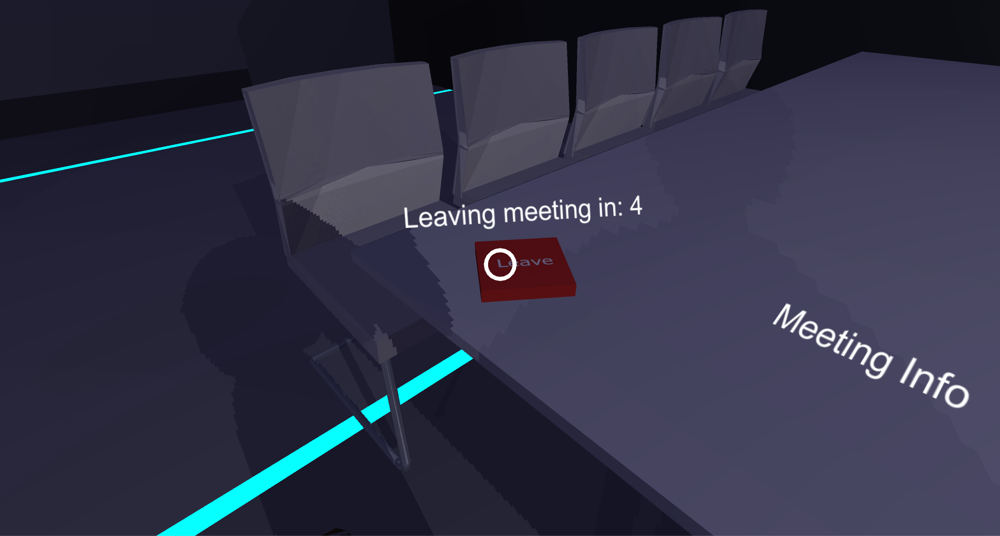
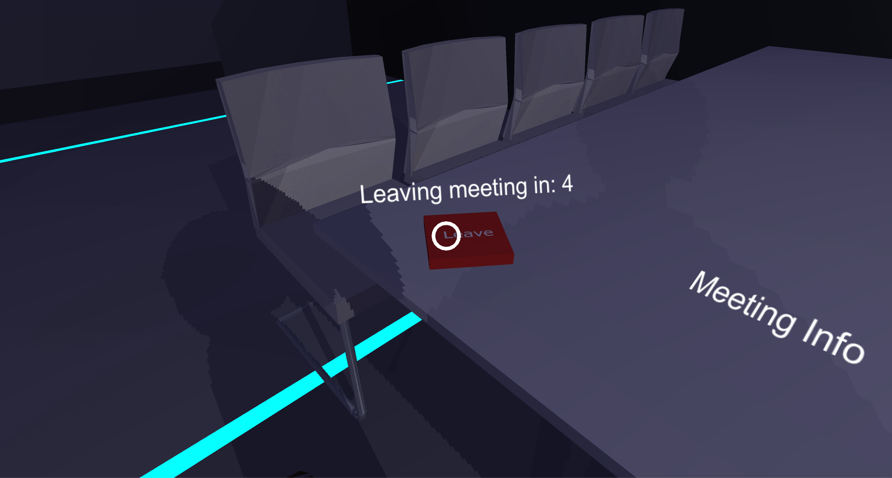
You can view information about the meeting by looking diagonally down infront of you. This will display the current presentation slide as well as the name of the user presenting the meeting
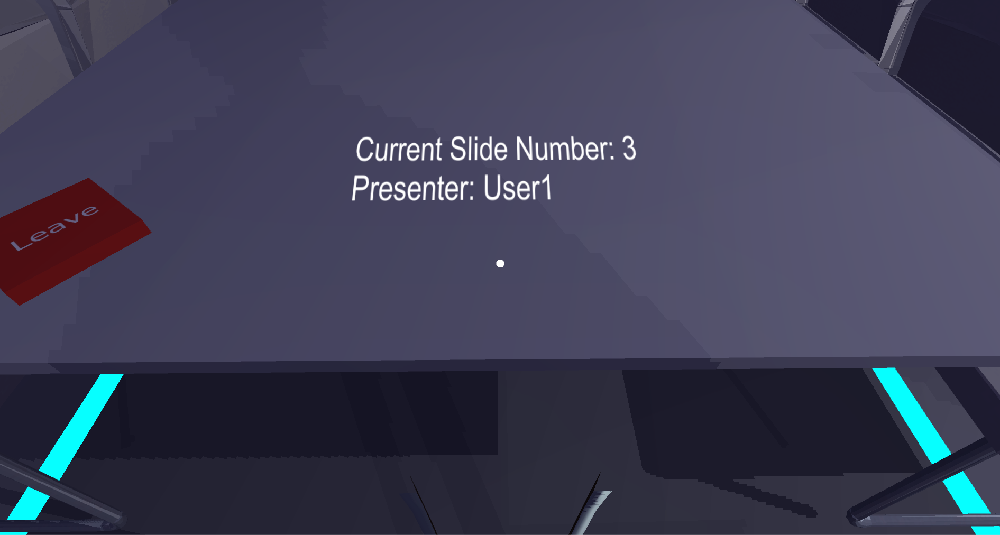If you are the presenter of a meeting (if you are the one who created it) then audio transmission will automatically be enabled. This means that your voice will be transmitted to all participants in the meeting with a short delay. This will then play out of the participant devices
Currently there is a 15 second delay on audio transmission